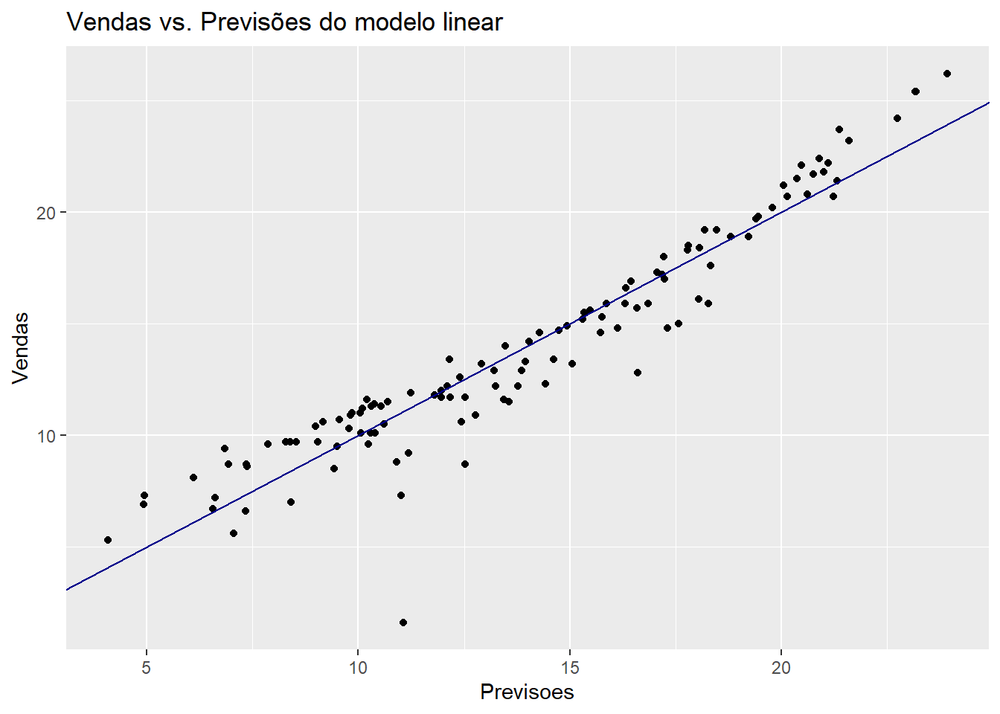
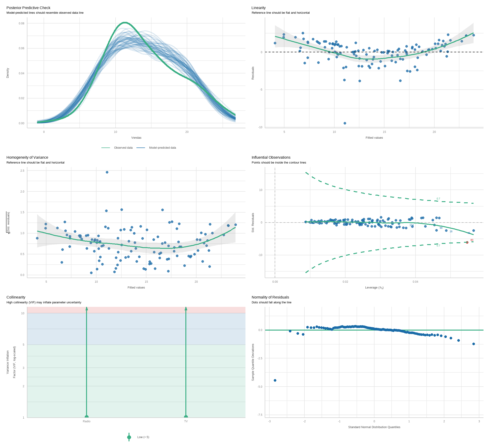
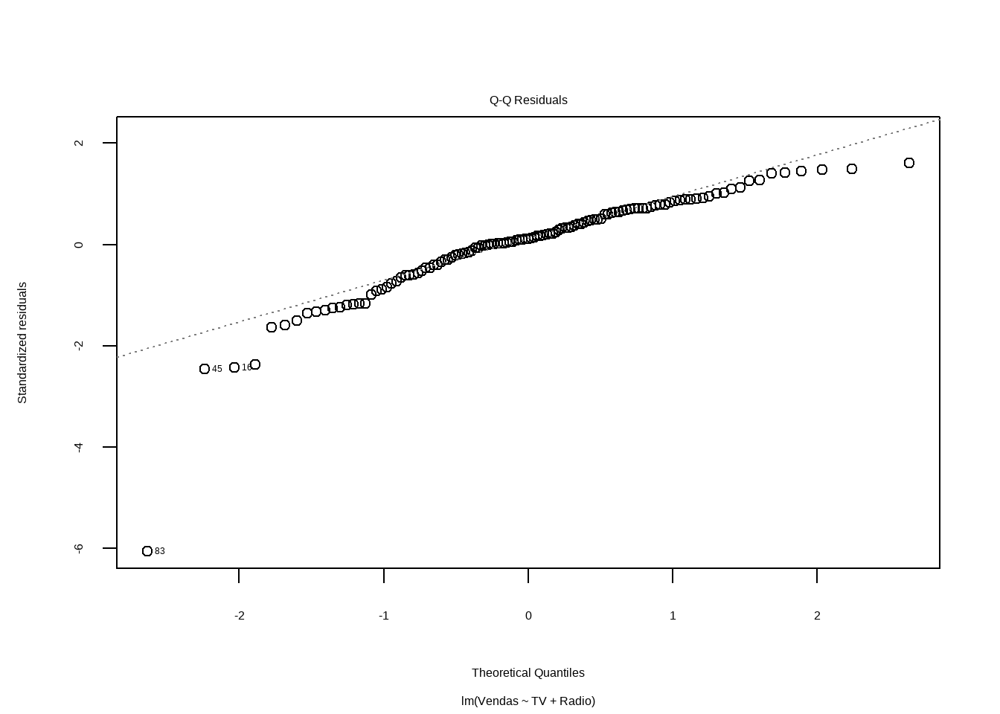
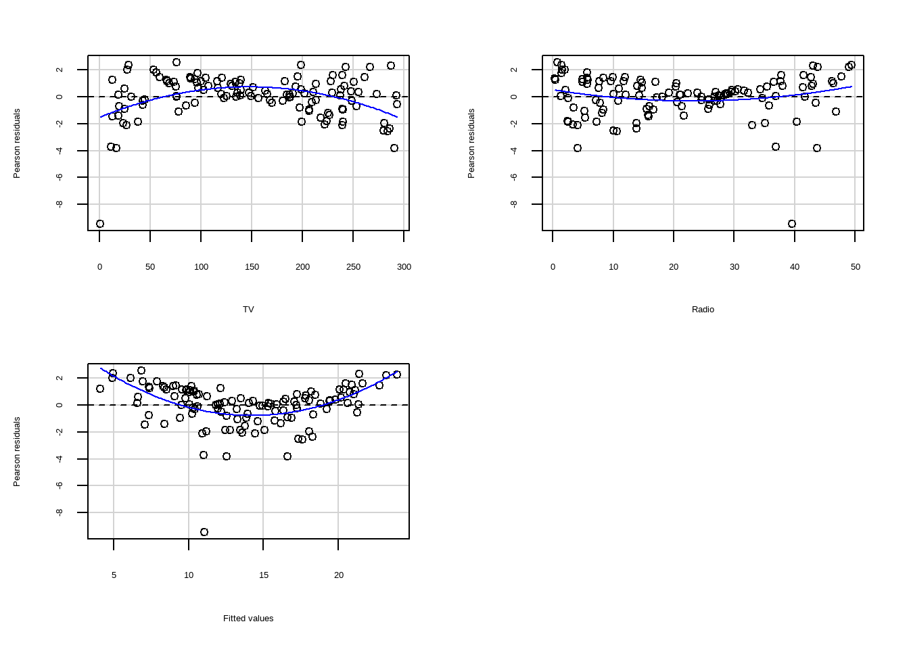

── Attaching core tidyverse packages ──────────────────────── tidyverse 2.0.0 ──
✔ dplyr 1.1.4 ✔ readr 2.1.5
✔ forcats 1.0.0 ✔ stringr 1.5.1
✔ ggplot2 3.5.0 ✔ tibble 3.2.1
✔ lubridate 1.9.3 ✔ tidyr 1.3.1
✔ purrr 1.0.2
── Conflicts ────────────────────────────────────────── tidyverse_conflicts() ──
✖ dplyr::filter() masks stats::filter()
✖ dplyr::lag() masks stats::lag()
ℹ Use the conflicted package (<http://conflicted.r-lib.org/>) to force all conflicts to become errorsRegressão Linear Múltipla
Carregando bibliotecas
Dados de propaganda
O conjunto de dados contém estatísticas sobre as vendas de um produto em 200 diferentes mercados, juntamente com orçamentos publicitários em cada um desses mercados, para diferentes canais de mídia: TV, rádio e jornal. As vendas estão em milhares de unidades e o orçamento está em milhares de dólares.
library(readxl)
propaganda <- read_excel("Propaganda.xlsx")
summary(propaganda) TV Radio Newspaper Sales
Min. : 0.70 Min. : 0.000 Min. : 0.30 Min. : 1.60
1st Qu.: 74.38 1st Qu.: 9.975 1st Qu.: 12.75 1st Qu.:10.38
Median :149.75 Median :22.900 Median : 25.75 Median :12.90
Mean :147.04 Mean :23.264 Mean : 30.55 Mean :14.02
3rd Qu.:218.82 3rd Qu.:36.525 3rd Qu.: 45.10 3rd Qu.:17.40
Max. :296.40 Max. :49.600 Max. :114.00 Max. :27.00 Renomeando
Sumario
summary(propaganda) TV Radio Jornal Vendas
Min. : 0.70 Min. : 0.000 Min. : 0.30 Min. : 1.60
1st Qu.: 74.38 1st Qu.: 9.975 1st Qu.: 12.75 1st Qu.:10.38
Median :149.75 Median :22.900 Median : 25.75 Median :12.90
Mean :147.04 Mean :23.264 Mean : 30.55 Mean :14.02
3rd Qu.:218.82 3rd Qu.:36.525 3rd Qu.: 45.10 3rd Qu.:17.40
Max. :296.40 Max. :49.600 Max. :114.00 Max. :27.00 nrow(propaganda)[1] 200Linhas inicias
| Propaganda | |||
|---|---|---|---|
| TV | Radio | Jornal | Vendas |
| 230.1 | 37.8 | 69.2 | 22.1 |
| 44.5 | 39.3 | 45.1 | 10.4 |
| 17.2 | 45.9 | 69.3 | 9.3 |
| 151.5 | 41.3 | 58.5 | 18.5 |
| 180.8 | 10.8 | 58.4 | 12.9 |
| 8.7 | 48.9 | 75.0 | 7.2 |
| 57.5 | 32.8 | 23.5 | 11.8 |
| 120.2 | 19.6 | 11.6 | 13.2 |
| 8.6 | 2.1 | 1.0 | 4.8 |
| 199.8 | 2.6 | 21.2 | 10.6 |
Criando amostra de treino e teste
Carregando pacotes exigidos: lattice
Attaching package: 'caret'The following object is masked from 'package:purrr':
liftset.seed(21)
y <- propaganda$Vendas
indice_teste <- createDataPartition(y, times = 1, p = 0.40, list = FALSE)
conj_treino <- propaganda[-indice_teste, ]
conj_teste <- propaganda[indice_teste, ]
str(conj_treino)tibble [119 × 4] (S3: tbl_df/tbl/data.frame)
$ TV : num [1:119] 230.1 151.5 180.8 199.8 66.1 ...
$ Radio : num [1:119] 37.8 41.3 10.8 2.6 5.8 35.1 7.6 47.7 20.5 23.9 ...
$ Jornal: num [1:119] 69.2 58.5 58.4 21.2 24.2 65.9 7.2 52.9 18.3 19.1 ...
$ Vendas: num [1:119] 22.1 18.5 12.9 10.6 8.6 9.2 9.7 22.4 11.3 14.6 ...str(conj_teste)tibble [81 × 4] (S3: tbl_df/tbl/data.frame)
$ TV : num [1:81] 44.5 17.2 8.7 57.5 120.2 ...
$ Radio : num [1:81] 39.3 45.9 48.9 32.8 19.6 2.1 24 32.9 36.6 39.6 ...
$ Jornal: num [1:81] 45.1 69.3 75 23.5 11.6 1 4 46 114 55.8 ...
$ Vendas: num [1:81] 10.4 9.3 7.2 11.8 13.2 4.8 17.4 19 12.5 24.4 ...| Name | Piped data |
| Number of rows | 119 |
| Number of columns | 4 |
| _______________________ | |
| Column type frequency: | |
| numeric | 4 |
| ________________________ | |
| Group variables | None |
Variable type: numeric
| skim_variable | n_missing | complete_rate | mean | sd | p0 | p25 | p50 | p75 | p100 | hist |
|---|---|---|---|---|---|---|---|---|---|---|
| TV | 0 | 1 | 150.82 | 84.00 | 0.7 | 77.30 | 149.8 | 224.90 | 293.6 | ▆▇▆▇▇ |
| Radio | 0 | 1 | 21.27 | 14.31 | 0.3 | 8.30 | 20.5 | 32.65 | 49.4 | ▇▅▆▃▃ |
| Jornal | 0 | 1 | 29.39 | 19.63 | 1.8 | 13.65 | 24.2 | 41.00 | 89.4 | ▇▇▃▂▁ |
| Vendas | 0 | 1 | 13.94 | 5.02 | 1.6 | 10.35 | 12.9 | 17.25 | 26.2 | ▁▇▇▃▂ |
| Name | Piped data |
| Number of rows | 81 |
| Number of columns | 4 |
| _______________________ | |
| Column type frequency: | |
| numeric | 4 |
| ________________________ | |
| Group variables | None |
Variable type: numeric
| skim_variable | n_missing | complete_rate | mean | sd | p0 | p25 | p50 | p75 | p100 | hist |
|---|---|---|---|---|---|---|---|---|---|---|
| TV | 0 | 1 | 141.50 | 88.75 | 4.1 | 67.8 | 149.7 | 216.8 | 296.4 | ▇▆▅▇▃ |
| Radio | 0 | 1 | 26.19 | 15.22 | 0.0 | 12.6 | 27.7 | 39.3 | 49.6 | ▇▆▆▇▇ |
| Jornal | 0 | 1 | 32.26 | 24.63 | 0.3 | 9.3 | 31.5 | 46.2 | 114.0 | ▇▆▃▁▁ |
| Vendas | 0 | 1 | 14.15 | 5.53 | 3.2 | 10.4 | 12.9 | 17.4 | 27.0 | ▃▇▆▃▃ |
E se eu usar uma outra semente?
set.seed(23)
y2 <- propaganda$Vendas
indice_teste2 <- createDataPartition(y2, times = 1, p = 0.40, list = FALSE)
conj_treino2 <- propaganda[-indice_teste2, ]
conj_teste2 <- propaganda[indice_teste2, ]
conj_treino2 %>% skim()| Name | Piped data |
| Number of rows | 119 |
| Number of columns | 4 |
| _______________________ | |
| Column type frequency: | |
| numeric | 4 |
| ________________________ | |
| Group variables | None |
Variable type: numeric
| skim_variable | n_missing | complete_rate | mean | sd | p0 | p25 | p50 | p75 | p100 | hist |
|---|---|---|---|---|---|---|---|---|---|---|
| TV | 0 | 1 | 140.38 | 85.41 | 0.7 | 69.90 | 139.2 | 210.15 | 296.4 | ▇▇▆▇▆ |
| Radio | 0 | 1 | 24.23 | 14.77 | 0.0 | 11.85 | 25.7 | 36.85 | 49.4 | ▇▆▇▆▇ |
| Jornal | 0 | 1 | 29.45 | 21.96 | 0.3 | 11.75 | 23.2 | 43.10 | 100.9 | ▇▆▃▂▁ |
| Vendas | 0 | 1 | 13.93 | 5.20 | 1.6 | 10.25 | 12.9 | 17.35 | 26.2 | ▁▇▇▅▃ |
| Name | Piped data |
| Number of rows | 81 |
| Number of columns | 4 |
| _______________________ | |
| Column type frequency: | |
| numeric | 4 |
| ________________________ | |
| Group variables | None |
Variable type: numeric
| skim_variable | n_missing | complete_rate | mean | sd | p0 | p25 | p50 | p75 | p100 | hist |
|---|---|---|---|---|---|---|---|---|---|---|
| TV | 0 | 1 | 156.83 | 86.09 | 4.1 | 75.5 | 170.2 | 228.3 | 289.7 | ▅▅▅▇▇ |
| Radio | 0 | 1 | 21.85 | 14.94 | 0.4 | 9.3 | 20.1 | 35.0 | 49.6 | ▇▅▅▅▃ |
| Jornal | 0 | 1 | 32.17 | 21.54 | 1.7 | 17.0 | 30.0 | 47.4 | 114.0 | ▇▆▅▁▁ |
| Vendas | 0 | 1 | 14.16 | 5.28 | 3.2 | 10.4 | 12.9 | 17.4 | 27.0 | ▂▇▆▃▂ |
Veja que as amostram ficaram com resultados diferentes, o que levaria a obtermos modelos diferentes num ajuste de regressão!
Regressão Simples
1a Regressão Multipla
Carregando pacotes exigidos: carData
Attaching package: 'car'The following object is masked from 'package:dplyr':
recodeThe following object is masked from 'package:purrr':
somescatterplotMatrix(conj_treino)
Call:
lm(formula = Vendas ~ TV + Radio + Jornal, data = conj_treino)
Residuals:
Min 1Q Median 3Q Max
-9.1595 -0.6961 0.2676 1.0298 2.5871
Coefficients:
Estimate Std. Error t value Pr(>|t|)
(Intercept) 3.268910 0.391828 8.343 1.81e-13 ***
TV 0.042705 0.001776 24.039 < 2e-16 ***
Radio 0.186439 0.011458 16.272 < 2e-16 ***
Jornal 0.008931 0.008292 1.077 0.284
---
Signif. codes: 0 '***' 0.001 '**' 0.01 '*' 0.05 '.' 0.1 ' ' 1
Residual standard error: 1.606 on 115 degrees of freedom
Multiple R-squared: 0.9002, Adjusted R-squared: 0.8976
F-statistic: 345.9 on 3 and 115 DF, p-value: < 2.2e-16Vejam que ao analisarmos a estatística t de Jornal percebemos que não podemos rejeitar a hipótese de que o coeficiente de Jornal possa ser zero.
Vamos refazer o modleo sem Jornal.
2a Regressao Multipla
Call:
lm(formula = Vendas ~ TV + Radio, data = conj_treino)
Residuals:
Min 1Q Median 3Q Max
-9.4585 -0.6886 0.1687 1.0799 2.5529
Coefficients:
Estimate Std. Error t value Pr(>|t|)
(Intercept) 3.441076 0.357985 9.612 <2e-16 ***
TV 0.042575 0.001774 24.005 <2e-16 ***
Radio 0.191607 0.010412 18.402 <2e-16 ***
---
Signif. codes: 0 '***' 0.001 '**' 0.01 '*' 0.05 '.' 0.1 ' ' 1
Residual standard error: 1.607 on 116 degrees of freedom
Multiple R-squared: 0.8992, Adjusted R-squared: 0.8975
F-statistic: 517.5 on 2 and 116 DF, p-value: < 2.2e-16Agora todas as variáveis tem indicação de significância estatística.
Confirmando o teste t com o teste F (ANOVA)
anova(mod5, mod4)Analysis of Variance Table
Model 1: Vendas ~ TV + Radio
Model 2: Vendas ~ TV + Radio + Jornal
Res.Df RSS Df Sum of Sq F Pr(>F)
1 116 299.47
2 115 296.48 1 2.9906 1.16 0.2837Vamos comparar com o modelo só com TV
anova(mod1, mod5)Analysis of Variance Table
Model 1: Vendas ~ TV
Model 2: Vendas ~ TV + Radio
Res.Df RSS Df Sum of Sq F Pr(>F)
1 117 1173.73
2 116 299.47 1 874.26 338.65 < 2.2e-16 ***
---
Signif. codes: 0 '***' 0.001 '**' 0.01 '*' 0.05 '.' 0.1 ' ' 1Veja que agora a diferença é significativa. O melhor modelo é o com TV e Radio (mod5)
Calculando o erro padrão do resíduo com amostra de teste
Comparando com a melhor regressão simples
Comparando valor real vs ajustado
conj_treino$Previsoes <- predict(mod5, data=conj_treino)
ggplot(conj_treino, aes(x=Previsoes, y=Vendas)) +
geom_point() +
geom_abline(color = "darkblue") +
ggtitle("Vendas vs. Previsões do modelo linear")
Análise Inicial dos Resíduos

Análise do Modelo - Parte 2
O pacote easystats tem uma função que faz uma análise mais detalhada do modelo. Os gráficos são mais fáceis de interpretar do que os obtidos com o plot do R base.
Análise do Modelo - Parte 3
O pacote car apresenta funções mais avançadas para análise de resíduos.
Para o gráfico de resíduos versus valores ajustados, podemos usar um teste chamado teste de Tukey de não aditividade (Tukey, 1949), ele é obtido adicionando os quadrados dos valores ajustados ao modelo e reajustando. O valor p para o teste de Tukey é obtido comparando a estatística de teste para a distribuição padrão-normal. O teste confirma a visível impressão de curvatura no gráfico residual, reforçando ainda mais a conclusão que o modelo não é adequado.
library(car)
residualPlots(mod5)
Test stat Pr(>|Test stat|)
TV -4.8383 4.102e-06 ***
Radio 1.9290 0.0562 .
Tukey test 6.4114 1.442e-10 ***
---
Signif. codes: 0 '***' 0.001 '**' 0.01 '*' 0.05 '.' 0.1 ' ' 1influencePlot(mod5)
StudRes Hat CookD
45 -2.512087 0.05650813 0.1204704
83 -7.289206 0.05466694 0.7066190Tentando avaliar transformações
Aqui vamos avaliar a necessidade de transformar as variáveis para melhorar o modelo.
summary(p1 <- powerTransform(Vendas ~ TV + Radio, data=conj_treino))bcPower Transformation to Normality
Est Power Rounded Pwr Wald Lwr Bnd Wald Upr Bnd
Y1 0.9937 1 0.8018 1.1856
Likelihood ratio test that transformation parameter is equal to 0
(log transformation)
LRT df pval
LR test, lambda = (0) 111.042 1 < 2.22e-16
Likelihood ratio test that no transformation is needed
LRT df pval
LR test, lambda = (1) 0.004149754 1 0.94864summary(p2 <- powerTransform(cbind(TV, Radio) ~1 , data=conj_treino))bcPower Transformations to Multinormality
Est Power Rounded Pwr Wald Lwr Bnd Wald Upr Bnd
TV 0.7692 1.0 0.5311 1.0073
Radio 0.5349 0.5 0.3429 0.7269
Likelihood ratio test that transformation parameters are equal to 0
(all log transformations)
LRT df pval
LR test, lambda = (0 0) 102.457 2 < 2.22e-16
Likelihood ratio test that no transformations are needed
LRT df pval
LR test, lambda = (1 1) 22.189 2 1.5196e-05
Análise do Modelo com car
# Fator de inflação da variância
vif(mod5) TV Radio
1.014454 1.014454 Teste dos resíduos
Teste de normalidade Teste de heterocedasticidade (Bresch-Pagan) Teste de autocorrelação (Durbin-Watson)
library(lmtest)Carregando pacotes exigidos: zoo
Attaching package: 'zoo'The following objects are masked from 'package:base':
as.Date, as.Date.numericmod5_sum <- summary(mod5)
# Teste de normalidade
shapiro.test(mod5_sum$residuals)
Shapiro-Wilk normality test
data: mod5_sum$residuals
W = 0.8645, p-value = 4.88e-09# Teste de heterocedasticidade
bptest(mod5)
studentized Breusch-Pagan test
data: mod5
BP = 4.9152, df = 2, p-value = 0.08564#Teste de autocorrelação
dwtest(mod5)
Durbin-Watson test
data: mod5
DW = 2.1717, p-value = 0.8286
alternative hypothesis: true autocorrelation is greater than 0Dado que parece outlier e é um valor influente
A função OutlierTest () no pacote do car localiza o maior resíduo studentizado em valor absoluto e calcula o teste t com correção de Bonferroni. O testes de Outlier utiliza uma distribuição t para testar se o maior valor do residuo studentizado do modelo é estatisticamente diferente das outras observações. Um valor p significativo indica um outlier extremo que merece um exame mais aprofundado.
outlierTest(mod5) rstudent unadjusted p-value Bonferroni p
83 -7.289206 4.2486e-11 5.0558e-09conj_treino[83,]# A tibble: 1 × 5
TV Radio Jornal Vendas Previsoes
<dbl> <dbl> <dbl> <dbl> <dbl>
1 0.7 39.6 8.7 1.6 11.1